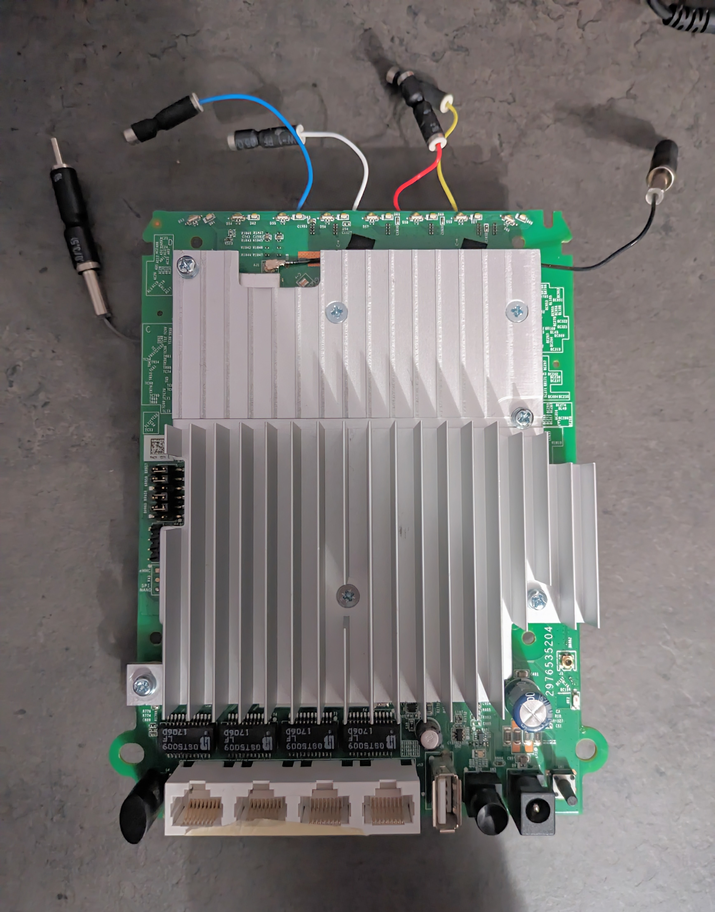
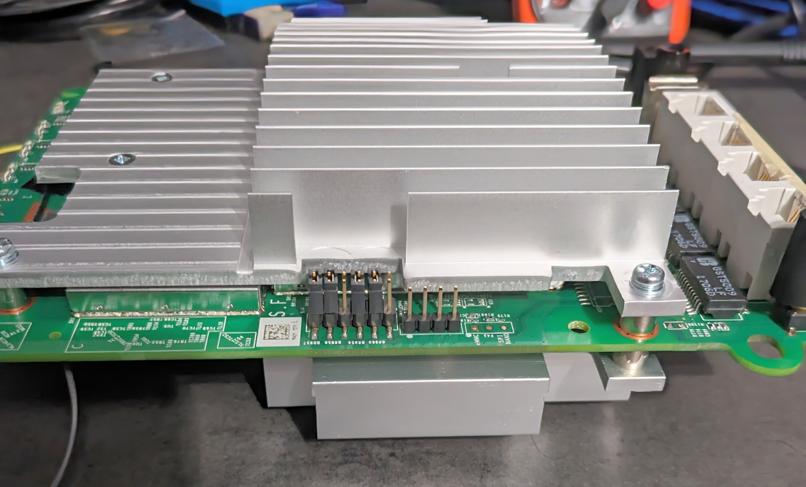
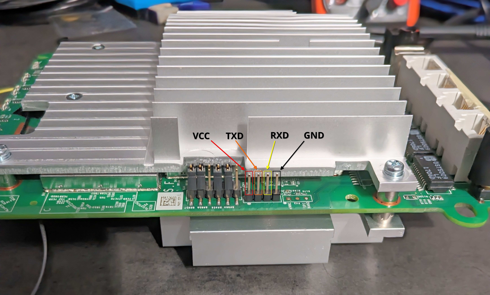

Intro
I have been watching some hardware hacking videos on YouTube recently and wanted to try for it myself. I found two old routers labeled “Orbi.” After looking them up, I found that one is the router and the other is called the “satellite” which to my understanding is just another access point. Neither of them were in use, They also hadn’t been updated in a while which made them perfect to try hardware hacking for the first time. My main goal was to dump the firmware and look through it at a later date.
System Details
- Device name:
Netgear Orbi RBR50 - RAM:
512MB - eMMC storage:
4GB - Architecture:
armv7l - Firmware version:
V2.3.5.30 - Kernel:
Linux RBR50 3.14.77 #1 SMP PREEMPT - U-Boot version:
V2012.07
UART
I took the board out of the plastic case but left the heat sinks on it, because I might put OpenWRT on it. I don’t want to have to reapply thermal paste later on if I can avoid it.

I noticed four pins on the left side of the board that i assumed to be UART.

I used a multimeter to check for continuity between the antenna and each pin, I found that the right most pin was continuous, meaning that it was ground. After finding ground, I turned my multimeter to voltage mode and tested each pin from left to right while booting up the router. The left most pin had a constant 3.3V to ground, meaning it was the VCC pin since it was supplying power. The second to the left most pin had a fluctuating voltage to ground, meaning it was the TXD pin because it was sending out data. The second to the right most pin had a voltage of 0 to ground, meaning it was the RXD pin because nothing was being transmitted through it. This gave me the pinout of:

Root Shell
I hooked up my UART to USB bridge with the pins and launched picocom with the guess baud rate of 115200.
$ picocom -b 115200 /dev/ttyUSB0
I hit the power button and got a wall of text of boot messages from U-Boot and the kernel. I noticed the root password getting changed in the wall of text, that is something I will look into later.
Changing password for root
[KC] RBS50 IPP v1.5 Start (Jun 6 2017 17:15:40)
New password:
Password for root changed by root
Changing password for admin
New password: traffic_meter start : .
I waited for the router to finish booting and was dropped into an unrestricted root shell.
Firmware Extraction
The first thing I did was to run mount to check what parts of the file system were writeable and executable.
root@RBS50:/# mount
rootfs on / type rootfs (rw)
/dev/root on /rom type squashfs (ro,relatime)
proc on /proc type proc (rw,nosuid,nodev,noexec,noatime)
sysfs on /sys type sysfs (rw,nosuid,nodev,noexec,noatime)
tmpfs on /tmp type tmpfs (rw,nosuid,nodev,noatime)
overlayfs:/tmp/overlay on / type overlayfs (rw,relatime,lowerdir=/,upperdir=/tmp/overlay)
tmpfs on /dev type tmpfs (rw,nosuid,relatime,size=512k,mode=755)
devpts on /dev/pts type devpts (rw,nosuid,noexec,relatime,mode=600)
debugfs on /sys/kernel/debug type debugfs (rw,noatime)
/dev/mmcblk0p27 on /tmp/device_tables type ext4 (rw,relatime,data=ordered)
Seeing that /tmp was writeable and executable it worked as a good place to download an arm binary of dd to use for firmware extraction.
root@RBS50:/# cd /tmp
root@RBS50:~# wget --no-check-certificate https://github.com/therealsaumil/statiD3
c-arm-bins/raw/master/dd-armel-static
--2024-05-24 18:04:06-- https://github.com/therealsaumil/static-arm-bins/raw/master/dd-armel-static
Resolving github.com... 140.82.113.4
Connecting to github.com|140.82.113.4|:443... connected.
WARNING: cannot verify github.com's certificate, issued by 'CN=Sectigo ECC Domain Validation Secure Server CA,O=Sectigo Limited,L=Salford,ST=Greater Manchester,C=GB':
Unable to locally verify the issuer's authority.
HTTP request sent, awaiting response... 302 Found
Location: https://raw.githubusercontent.com/therealsaumil/static-arm-bins/master/dd-armel-static [following]
--2024-05-24 18:04:06-- https://raw.githubusercontent.com/therealsaumil/static-arm-bins/master/dd-armel-static
Resolving raw.githubusercontent.com... 2606:50c0:8003::154, 2606:50c0:8001::154, 2606:50c0:8002::154, ...
Connecting to raw.githubusercontent.com|2606:50c0:8003::154|:443... failed: Network is unreachable.
Connecting to raw.githubusercontent.com|2606:50c0:8001::154|:443... failed: Network is unreachable.
Connecting to raw.githubusercontent.com|2606:50c0:8002::154|:443... failed: Network is unreachable.
Connecting to raw.githubusercontent.com|2606:50c0:8000::154|:443... failed: Network is unreachable.
Connecting to raw.githubusercontent.com|185.199.111.133|:443... connected.
WARNING: cannot verify raw.githubusercontent.com's certificate, issued by 'CN=DigiCert Global G2 TLS RSA SHA256 2020 CA1,O=DigiCert Inc,C=US':
Unable to locally verify the issuer's authority.
HTTP request sent, awaiting response... 200 OK
Length: 674832 (659K) [application/octet-stream]
Saving to: 'dd-armel-static'
dd-armel-static 100%[===================>] 659.02K 2.88MB/s in 0.2s
2024-05-24 18:04:07 (2.88 MB/s) - 'dd-armel-static' saved [674832/674832]
root@RBS50:~# chmod u+x dd-armel-static
From here I needed some way to take the firmware off the device. Luckily the router has a USB port. I formatted a spare USB thumb drive to FAT32 to avoid any possible compatibility issues, then plugged it into the router. The router automatically mounted the USB drive to tmp/mnt/sda1. Now that I had a place to put the firmware, I checked for block devices in /dev.
root@RBS50:~# ls /dev/
atherosgpio mmcblk0p15 mmcblk0p4 switch_ssdk
bus mmcblk0p16 mmcblk0p5 tty
console mmcblk0p17 mmcblk0p6 ttyMSM0
cpu_dma_latency mmcblk0p18 mmcblk0p7 ttyQHS0
crypto mmcblk0p19 mmcblk0p8 ttyS0
full mmcblk0p2 mmcblk0p9 ttyS1
fuse mmcblk0p20 mmcblk0rpmb ubi_ctrl
hwrng mmcblk0p21 msm_sps urandom
i2c-0 mmcblk0p22 net usblp0
kmsg mmcblk0p23 network_latency usblp1
log mmcblk0p24 network_throughput usblp2
mapper mmcblk0p25 null usblp3
mem mmcblk0p26 port usblp4
mmcblk0 mmcblk0p27 ppp usblp5
mmcblk0boot0 mmcblk0p28 ptmx usblp6
mmcblk0boot1 mmcblk0p29 pts usblp7
mmcblk0p1 mmcblk0p3 random usblp8
mmcblk0p10 mmcblk0p30 sda usblp9
mmcblk0p11 mmcblk0p31 sda1 watchdog
mmcblk0p12 mmcblk0p32 sg0 watchdog0
mmcblk0p13 mmcblk0p33 shm zero
mmcblk0p14 mmcblk0p34 snd
root@RBS50:~# blockdev --getsize64 /dev/mmcblk0
3909091328
Knowing the size of the chip on the device is 4GB; it was clear that mmcblk0 was the entire device’s storage. At that point, all I had to do was use dd to copy the block device to my USB drive.
root@RBS50:~# /tmp/dd-armel-static if=/dev/mmcblk0 of=/tmp/mnt/sda1/mmcblk0.bin
7634944+0 records in
7634944+0 records out
3909091328 bytes (3.9 GB, 3.6 GiB) copied, 760.989 s, 5.1 MB/s
root@RBS50:~# umount /tmp/mnt/sda1/
Conclusion
The Orbi was quite insecure on the hardware level which made it a great first target to try hardware hacking. I was easily able to extract the entire storage simply by getting into the UART shell. Later on, I’m going to do an in-depth exploration of the firmware image since there were definitely some interesting things i could see at first glance as well as in the boot messages.